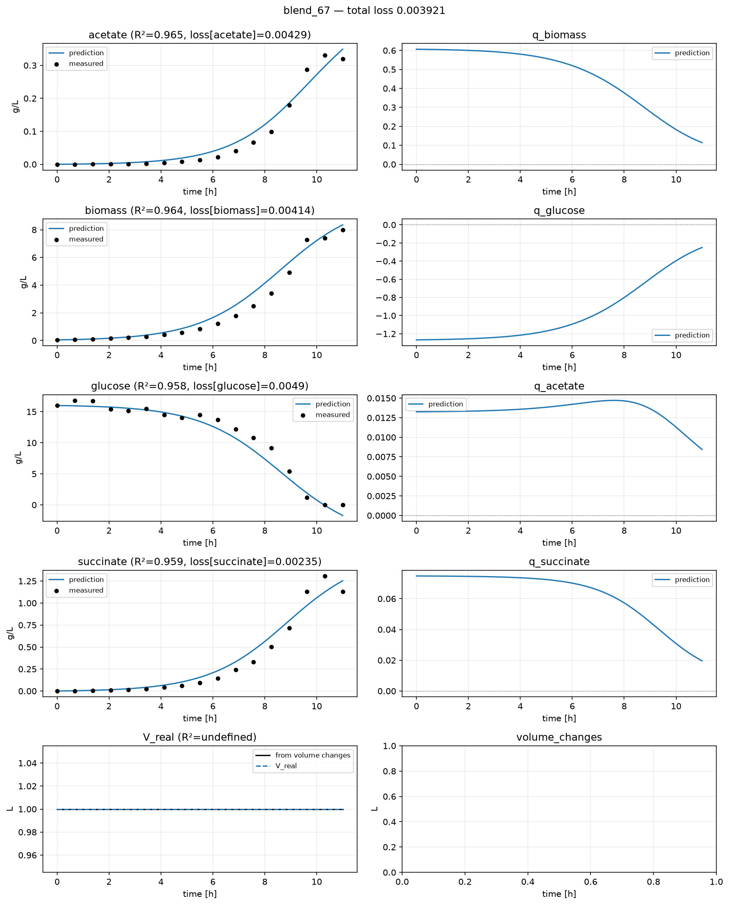

PLS-dFBA¶
Demonstrates. FBA-Hyb’s surrogate, extended with a real PLS-shaped component (a linear, low-rank latent-variable regression, not a neural network) that reads media composition alongside state, so a controllable recipe choice measurably shifts the predicted metabolic corridor.
Inspired by Negahban et al. 2026 [3], “Run-to-run optimization of CHO cell culture media using high-throughput microscale bioreactor system and a hybrid modeling approach,” whose hybrid PLS-dFBA model predicts kinetic rate constraints from a Partial Least Squares regression fed by both state and media blend composition, then uses those constraints inside a dynamic FBA. This page reproduces that structural idea (a data-driven regression, aware of recipe as well as physiology, shaping the FBA solution), built on the same real, frozen surrogate as FBA-Hyb. It is not a replication of their method: their model is identified via a bi-level NMSE fit plus a gradient-correction run-to-run optimization loop against real bioreactor data; this page trains by ordinary gradient descent through the whole ODE trajectory, once, against synthetic data.
The one piece worth being explicit about: PLS itself is a specific algorithm (linear, latent-variable regression, fit via NIPALS). The component below reproduces its actual structural form: predictors compressed into a handful of latent components, then linearly regressed onto outputs, no nonlinearity anywhere. It is trained by gradient descent, not NIPALS, which is the one disclosed algorithmic substitution; the shape itself is real PLS, not a relabeled neural network.
The walkthrough below shows the file in pieces, next to the reasoning for each one. For the whole thing at once: to copy, diff against your own, or just read top to bottom:
Full custom.py
1"""PLS-dFBA-inspired reaction module on e_coli_core.
2
3Builds on fba_hyb.md, but replaces its MLP with an actual PLS-shaped
4component: a linear, low-rank latent-variable regression (predictors -> a
5handful of latent components -> outputs), which is PLS's real structural
6form: no nonlinearity anywhere in the regression itself.
7Trained here by ordinary gradient descent through the whole ODE trajectory
8rather than NIPALS (the actual algorithm real PLS is fit with): the one
9disclosed algorithmic difference from a textbook PLS fit.
10
11Also adds a controlled process variable, `media_blend_fraction`, attached via
12`transform_process_collection`. The PLS component takes the blend fraction as
13an extra predictor alongside state, so the predicted FBA objective weights,
14and hence the predicted rates, become a function of both physiology AND
15recipe: Negahban et al. 2026's real structural idea (a kinetic corridor that
16depends on media composition).
17"""
18
19import equinox as eqx
20import jax
21import jax.numpy as jnp
22import numpy as np
23
24import hybrax.format as hxf
25from hybrax.format.time_series import TimeSeries
26from hybrax.train import (
27 EstimatedScales,
28 ReactionInputs,
29 ReactionOutputs,
30 UserReactionModule,
31 trainable_field,
32)
33
34AVG_QG = 10.250012796042299
35AVG_N = jnp.array([1.00000008, 1.00000023, 1.00000072, 0.99999969])
36MW = jnp.array([180.156, 60.05, 118.09]) # glucose, acetate, succinate (g/mol)
37
38BLEND_BY_PROCESS = {
39 "blend_00": 0.0,
40 "blend_33": 0.33,
41 "blend_67": 0.67,
42 "blend_100": 1.0,
43}
44
45
46def transform_process_collection(collection, config):
47 del config
48 for name, process in collection.processes.items():
49 blend = BLEND_BY_PROCESS[name]
50 times = process.reactor_medium.components["biomass"].concentration.times
51 process.process_variables["media_blend_fraction"] = hxf.ProcessVariable(
52 name="media_blend_fraction",
53 unit="-",
54 is_controlled=True,
55 values=TimeSeries(times=times, values=np.full(times.shape, blend)),
56 bounds=(0.0, 1.0),
57 )
58 return collection
59
60
61def _pos(B):
62 return 0.5 * (B + jnp.sqrt(B * B + 1.5))
63
64
65def surrogate_fba(x):
66 """SCALED [qG, n_X, n_M, n_A, n_S] -> RAW [q_glc, qX, qM, qA, qS],
67 mmol/(gX.h). Identical fit to fba_hyb.md's surrogate; this page uses all
68 five outputs (n_S/qS included), where fba_hyb.md drops them.
69 """
70 qG = x[0] / AVG_QG
71 n = x[1:5] / AVG_N
72 n_X, n_M, n_A, n_S = n[0], n[1], n[2], n[3]
73 q_glc = -AVG_QG * qG
74 qX = (
75 qG
76 * (
77 -40.05086 * n_X
78 - 0.011743758 * n_M
79 + 0.014346741 * n_A
80 - 0.0052064408 * n_S
81 + 0.0082783369
82 )
83 * (
84 -49.319124 * n_X
85 - 0.41473128 * n_M
86 + 2.1157595 * n_A
87 - 1.6528906 * n_S
88 - 3.5412292
89 )
90 / (
91 (
92 _pos(
93 24.688972 * n_X
94 + 0.20074873 * n_M
95 - 1.0261536 * n_A
96 + 0.79800013 * n_S
97 + 1.7869275
98 )
99 + 0.05
100 )
101 * (
102 _pos(
103 85.331771 * n_X
104 + 0.48121828 * n_M
105 + 1.7234505 * n_A
106 + 4.5642331 * n_S
107 - 0.46385535
108 )
109 + 0.05
110 )
111 )
112 )
113 qM = (
114 qG
115 * (
116 -30.549273 * n_X
117 - 0.26807454 * n_M
118 + 0.60650343 * n_A
119 - 1.143952 * n_S
120 - 0.92775662
121 )
122 * (
123 -0.037824693 * n_X
124 - 24.825578 * n_M
125 + 0.027984563 * n_A
126 + 0.0020666315 * n_S
127 - 0.007740588
128 )
129 / (
130 (
131 _pos(
132 17.512874 * n_X
133 + 0.16739751 * n_M
134 - 0.27899872 * n_A
135 + 0.67477612 * n_S
136 + 0.76306517
137 )
138 + 0.05
139 )
140 * (
141 _pos(
142 46.415016 * n_X
143 + 0.22525384 * n_M
144 + 0.68795142 * n_A
145 + 2.3243431 * n_S
146 - 0.91656303
147 )
148 + 0.05
149 )
150 )
151 )
152 qA = (
153 qG
154 * (
155 0.11560359 * n_X
156 + 0.025412058 * n_M
157 + 24.333516 * n_A
158 + 0.037186754 * n_S
159 - 0.094942148
160 )
161 * (
162 20.777323 * n_X
163 - 0.40676165 * n_M
164 + 3.1964066 * n_A
165 + 0.9569548 * n_S
166 - 0.19868886
167 )
168 / (
169 (
170 _pos(
171 41.246274 * n_X
172 - 0.34994074 * n_M
173 + 4.3166512 * n_A
174 + 2.1503221 * n_S
175 - 1.9194144
176 )
177 + 0.05
178 )
179 * (
180 _pos(
181 13.35614 * n_X
182 - 0.041404912 * n_M
183 + 0.72777261 * n_A
184 + 0.64795735 * n_S
185 + 0.29150121
186 )
187 + 0.05
188 )
189 )
190 )
191 qS = (
192 qG
193 * (
194 -0.028994836 * n_X
195 + 0.00034001442 * n_M
196 + 0.018303022 * n_A
197 - 17.239703 * n_S
198 - 0.0048146897
199 )
200 * (
201 -55.150953 * n_X
202 - 0.50212877 * n_M
203 + 1.331242 * n_A
204 - 1.9245035 * n_S
205 - 1.8896264
206 )
207 / (
208 (
209 _pos(
210 44.312184 * n_X
211 + 0.20545498 * n_M
212 + 0.56363208 * n_A
213 + 2.2376853 * n_S
214 - 0.70094854
215 )
216 + 0.05
217 )
218 * (
219 _pos(
220 22.984164 * n_X
221 + 0.22825551 * n_M
222 - 0.41448157 * n_A
223 + 0.81603398 * n_S
224 + 1.0517311
225 )
226 + 0.05
227 )
228 )
229 )
230 return jnp.array([q_glc, qX, qM, qA, qS])
231
232
233def _bounded_softplus(x, alpha):
234 return jnp.tanh(jax.nn.softplus(x) / alpha) * alpha
235
236
237class PLSComponent(eqx.Module):
238 """Linear, low-rank latent-variable regression: predictors -> a handful
239 of latent components -> outputs. This is PLS's actual structural form
240 (no nonlinearity anywhere), standing in for Negahban et al. 2026's own
241 piecewise-nonlinear PLS regression, whose piecewise refinement is the
242 one part not reproduced here. `n_components` << `n_in` is the whole
243 point of PLS: compress collinear predictors (state + media composition)
244 into a handful of components before regressing onto the outputs.
245 """
246
247 W: jax.Array = trainable_field() # (n_in, n_components) predictor loadings
248 Q: jax.Array = trainable_field() # (n_components, n_out) response loadings
249 b: jax.Array = trainable_field() # (n_out,) intercept
250
251 def __init__(self, *, n_in, n_out, n_components, key):
252 k1, k2 = jax.random.split(key)
253 scale = 1.0 / jnp.sqrt(n_in)
254 self.W = jax.random.normal(k1, (n_in, n_components)) * scale
255 self.Q = jax.random.normal(k2, (n_components, n_out)) * scale
256 self.b = jnp.zeros(n_out)
257
258 def scores(self, x):
259 return x @ self.W
260
261 def __call__(self, x):
262 return self.scores(x) @ self.Q + self.b
263
264
265class PLSdFBAReactionModule(UserReactionModule):
266 pls: PLSComponent = trainable_field()
267
268 def __init__(self, *, key, n_components=3, **scale_kwargs):
269 super().__init__(**scale_kwargs)
270 n_in = self.n_modeled_RMCs + self.n_controlled_PVs
271 self.pls = PLSComponent(n_in=n_in, n_out=5, n_components=n_components, key=key)
272
273 def __call__(self, t, inputs: ReactionInputs) -> ReactionOutputs:
274 del t
275 SCL_features = jnp.concatenate(
276 [inputs.SCL_modeled_RMCs, inputs.SCL_controlled_PVs]
277 )
278
279 raw = self.pls(SCL_features)
280 qG = _bounded_softplus(raw[0], 18.0)
281 n_X = _bounded_softplus(raw[1], 1.8)
282 n_M = _bounded_softplus(raw[2], 1.8)
283 n_A = _bounded_softplus(raw[3], 1.8)
284 n_S = _bounded_softplus(raw[4], 1.8)
285
286 fba_out = surrogate_fba(jnp.array([qG, n_X, n_M, n_A, n_S]))
287 q_glc, qX, _qM, qA, qS = (
288 fba_out[0],
289 fba_out[1],
290 fba_out[2],
291 fba_out[3],
292 fba_out[4],
293 )
294
295 RAW_glc = q_glc * MW[0] / 1000.0
296 RAW_ace = qA * MW[1] / 1000.0
297 RAW_suc = qS * MW[2] / 1000.0
298 RAW_rates = jnp.array([qX, RAW_glc, RAW_ace, RAW_suc])
299
300 return ReactionOutputs(
301 SCL_modeled_BiologicalOde_rates=self.scale_modeled_BiologicalOde_rates(
302 RAW_rates
303 ),
304 SCL_modeled_Outflows_rates=jnp.zeros(0),
305 SCL_modeled_Inflows_rates=jnp.zeros(0),
306 auxiliary={
307 "n_weights": jnp.array([n_X, n_M, n_A, n_S]),
308 "latent_scores": self.pls.scores(SCL_features),
309 },
310 )
311
312
313def build_reaction_module(*, seed, **kwargs):
314 scale_kwargs = {k: v for k, v in kwargs.items() if k.startswith("SCALE_")}
315 return PLSdFBAReactionModule(key=jax.random.key(seed), **scale_kwargs)
316
317
318def estimate_all_scales(runtime_data, target_names, config):
319 del target_names, config
320 rhs = runtime_data.rhs_ode
321 controls_store = runtime_data.controls_store
322 n_processes = len(runtime_data.process_order)
323
324 def max_abs_state(name):
325 best = 0.0
326 for i in range(n_processes):
327 _, values = runtime_data.raw_state_trace(i, name)
328 if values.size:
329 best = max(best, float(np.max(np.abs(values))))
330 return max(best, 1e-6)
331
332 rmc_scale = {name: max_abs_state(name) for name in rhs.name_modeled_RMCs}
333
334 def rate_scale_for(species):
335 per_process = []
336 for i in range(n_processes):
337 c_times, c_values = runtime_data.raw_state_trace(i, species)
338 x_times, x_values = runtime_data.raw_state_trace(i, "biomass")
339 exposure = np.trapezoid(x_values, x_times)
340 per_process.append(abs(c_values[-1] - c_values[0]) / max(exposure, 1e-9))
341 return max(max(per_process), 1e-9)
342
343 rate_scale = [rate_scale_for(name[2:]) for name in rhs.name_modeled_rates]
344
345 n_PV = len(controls_store.name_controlled_PVs)
346 empty = jnp.zeros(0)
347 return EstimatedScales(
348 SCALE_modeled_RMCs=jnp.asarray([rmc_scale[n] for n in rhs.name_modeled_RMCs]),
349 SCALE_modeled_BiologicalOde_rates=jnp.asarray(rate_scale),
350 SCALE_V_in_cumulative=jnp.asarray(
351 max(runtime_data.initial_volume(i) for i in range(n_processes))
352 ),
353 SCALE_modeled_Inflows_cumulative=empty,
354 SCALE_modeled_Inflows_rates=empty,
355 SCALE_modeled_Outflows_cumulative=empty,
356 SCALE_modeled_Outflows_rates=empty,
357 SCALE_controlled_Inflows_cumulative=empty,
358 SCALE_controlled_Inflows_rates=empty,
359 SCALE_controlled_Outflows_cumulative=empty,
360 SCALE_controlled_Outflows_rates=empty,
361 SCALE_controlled_PVs=jnp.ones(n_PV),
362 SCALE_controlled_Inflows_Cin=jnp.maximum(
363 jnp.abs(jnp.asarray(rhs.Cin_controlled_Inflows)), 1.0
364 ),
365 SCALE_modeled_Inflows_Cin=jnp.maximum(
366 jnp.abs(jnp.asarray(rhs.Cin_modeled_Inflows)), 1.0
367 ),
368 )
A controlled process variable for recipe¶
demo_ecoli_blend has four runs, each forward-simulated from the same surrogate
under a different media_blend_fraction in [0, 1]: higher fractions push more
carbon toward succinate (the deliberate product here) at a modest cost to growth,
the same real trade-off Negahban et al. 2026 optimize for with three real media.
ReactionInputs has no “which recipe produced this run” field, by design; a
constant-valued controlled process variable does the job instead, the same mechanism
Knowledge transfer uses for product identity:
1def transform_process_collection(collection, config):
2 del config
3 for name, process in collection.processes.items():
4 blend = BLEND_BY_PROCESS[name]
5 times = process.reactor_medium.components["biomass"].concentration.times
6 process.process_variables["media_blend_fraction"] = hxf.ProcessVariable(
7 name="media_blend_fraction",
8 unit="-",
9 is_controlled=True,
10 values=TimeSeries(times=times, values=np.full(times.shape, blend)),
11 bounds=(0.0, 1.0),
12 )
13 return collection
The PLS component¶
1class PLSComponent(eqx.Module):
2 """Linear, low-rank latent-variable regression: predictors -> a handful
3 of latent components -> outputs. This is PLS's actual structural form
4 (no nonlinearity anywhere), standing in for Negahban et al. 2026's own
5 piecewise-nonlinear PLS regression, whose piecewise refinement is the
6 one part not reproduced here. `n_components` << `n_in` is the whole
7 point of PLS: compress collinear predictors (state + media composition)
8 into a handful of components before regressing onto the outputs.
9 """
10
11 W: jax.Array = trainable_field() # (n_in, n_components) predictor loadings
12 Q: jax.Array = trainable_field() # (n_components, n_out) response loadings
13 b: jax.Array = trainable_field() # (n_out,) intercept
14
15 def __init__(self, *, n_in, n_out, n_components, key):
16 k1, k2 = jax.random.split(key)
17 scale = 1.0 / jnp.sqrt(n_in)
18 self.W = jax.random.normal(k1, (n_in, n_components)) * scale
19 self.Q = jax.random.normal(k2, (n_components, n_out)) * scale
20 self.b = jnp.zeros(n_out)
21
22 def scores(self, x):
23 return x @ self.W
24
25 def __call__(self, x):
26 return self.scores(x) @ self.Q + self.b
W compresses n_in predictors (state + media_blend_fraction) down to
n_components = 3 latent scores; Q regresses those scores back out to the 5
surrogate inputs. No activation function anywhere in __call__: real PLS is linear
end to end, which is the whole reason it needs a low-rank bottleneck to handle
collinear predictors in the first place, rather than just more capacity.
1class PLSdFBAReactionModule(UserReactionModule):
2 pls: PLSComponent = trainable_field()
3
4 def __init__(self, *, key, n_components=3, **scale_kwargs):
5 super().__init__(**scale_kwargs)
6 n_in = self.n_modeled_RMCs + self.n_controlled_PVs
7 self.pls = PLSComponent(n_in=n_in, n_out=5, n_components=n_components, key=key)
8
9 def __call__(self, t, inputs: ReactionInputs) -> ReactionOutputs:
10 del t
11 SCL_features = jnp.concatenate(
12 [inputs.SCL_modeled_RMCs, inputs.SCL_controlled_PVs]
13 )
14
15 raw = self.pls(SCL_features)
16 qG = _bounded_softplus(raw[0], 18.0)
17 n_X = _bounded_softplus(raw[1], 1.8)
18 n_M = _bounded_softplus(raw[2], 1.8)
19 n_A = _bounded_softplus(raw[3], 1.8)
20 n_S = _bounded_softplus(raw[4], 1.8)
21
22 fba_out = surrogate_fba(jnp.array([qG, n_X, n_M, n_A, n_S]))
23 q_glc, qX, _qM, qA, qS = (
24 fba_out[0],
25 fba_out[1],
26 fba_out[2],
27 fba_out[3],
28 fba_out[4],
29 )
30
31 RAW_glc = q_glc * MW[0] / 1000.0
32 RAW_ace = qA * MW[1] / 1000.0
33 RAW_suc = qS * MW[2] / 1000.0
34 RAW_rates = jnp.array([qX, RAW_glc, RAW_ace, RAW_suc])
35
36 return ReactionOutputs(
37 SCL_modeled_BiologicalOde_rates=self.scale_modeled_BiologicalOde_rates(
38 RAW_rates
39 ),
40 SCL_modeled_Outflows_rates=jnp.zeros(0),
41 SCL_modeled_Inflows_rates=jnp.zeros(0),
42 auxiliary={
43 "n_weights": jnp.array([n_X, n_M, n_A, n_S]),
44 "latent_scores": self.pls.scores(SCL_features),
45 },
46 )
The rest of the reaction module (surrogate call, unit conversion, scaling) is
unchanged from FBA-Hyb: only what predicts the surrogate’s inputs
changed, from an MLP to this PLS component, and the component now reads
SCL_controlled_PVs (the blend fraction) alongside state.
Training¶
2026-08-27 13:35:17 INFO __main__: training complete: first_mean_loss=0.154834 last_mean_loss=0.00373269 delta=-0.151101
run directory: ./source/_data/out/runs/gallery_pls_dfba/run
biomass R2 = 0.9732
glucose R2 = 0.9641
acetate R2 = 0.9452
succinate R2 = 0.9680

Every predictor passes through only three latent scores before the final linear regression: that low-rank bottleneck is PLS’s actual structural signature, not an implementation detail. The R² values above are what that bottleneck achieves against this page’s dummy data, which is the question this page sets out to answer.
Gotchas¶
prepare-config.jsonneedscustom_pyat the top level, not just the train config. Omit it andtransform_process_collectionsilently never runs: no error, no warning,media_blend_fractionjust never gets attached. See Prepare.n_componentsis the whole tuning knob for PLS’s linear bottleneck. Too few and the bottleneck cannot represent the real relationship between recipe and metabolism; too many and the “compress collinear predictors” idea PLS exists for stops doing anything.The surrogate itself is unchanged from FBA-Hyb: only what predicts its inputs differs. This page’s predictions are only ever as good as that shared, frozen fit.
See also¶
Run the example yourself at ./source/_data/out/runs/gallery_pls_dfba/.
FBA-Hyb: the surrogate and the base reaction-module shape this builds on.
Knowledge transfer: the same controlled-PV-as-recipe trick, for product identity instead of a continuous blend fraction.
The Reaction Module:
auxiliary, and everything else aUserReactionModulecan return.
References¶
Gotsmy, M., & Guillén-Gosálbez, G. (2026). Integrating metabolic networks into hybrid bioprocess models. bioRxiv. https://doi.org/10.64898/2026.04.22.720062v1
Orth, J. D., Fleming, R. M. T., & Palsson, B. Ø. (2010). Reconstruction and use of microbial metabolic networks: the core Escherichia coli metabolic model as an educational guide. EcoSal Plus, 4(1). https://doi.org/10.1128/ecosalplus.10.2.1
Negahban, Z., Ghodba, A., Richelle, A., McCready, C., Ward, V., & Budman, H. (2026). Run-to-run optimization of CHO cell culture media using high-throughput microscale bioreactor system and a hybrid modeling approach. Journal of Biotechnology, 417, 274-286. https://doi.org/10.1016/j.jbiotec.2026.06.011